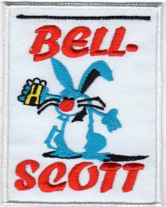

| Local Resources |
|
Belleville Parks and Recreation
takes care of the bike trail and parks
that we run through. |
|
|
Get Up Go is a Health and Fitness Challenge for Communities, Groups and
Organizations of St. Clair County, Illinois.)
|
|
Metro East Park and Recreation
District shall have as its primary duty
the development, operation, and
maintenance of a public system of
interconnecting trails and parks
throughout St Clair and Madison
County. |

|
Trailnet is a St. Louis based
non-profit organization with a 20-year
history of Promoting Active Living as a
way of life that encourages people to
integrate physical activity into their
daily routines. |
|
|
A hash is a run with beer at the
beginning, middle, and end, followed by
a lot more beer and some very silly
songs. |
|  |
Southern Illinois Hashers. They
tend to meet somewhere in the area
between Troy, Cahokia, Columbia and
Prairie du Rocher. Quite a few are in
Belleville. They currently run on 1st,
3rd and 5th Saturdays |
| Running Resources |
 |
Coolrunning.com is a running website. The
link takes you to their aches and pains section
to help you out with any running pains that you
might be having. |
 |
Runningintheusa.com is a website with
national listings of races, running clubs,
etc. |
|
The US Race Calendar is for promoting
running and racing. All race directors, event
managers and running clubs can use the US Race
Calendar for their race website.) |
|
Athlinks is the largest results database for
competitive endurance athletes in the world.
They pull in times for running races, triathlon,
swimming, cycling, mountain biking … pretty much
any timed endurance sport that you can think of
– if they can find the results, they will add
them to the database and link them to members’
accounts.) |
|
|
Mapmyrun.com is a social wellness-oriented
website that allows mapping routes, tracking
fitness, etc. |
|
A web resource for sports related injuries |
|
Thanks Ms. Deborah Ward and Carrie! |